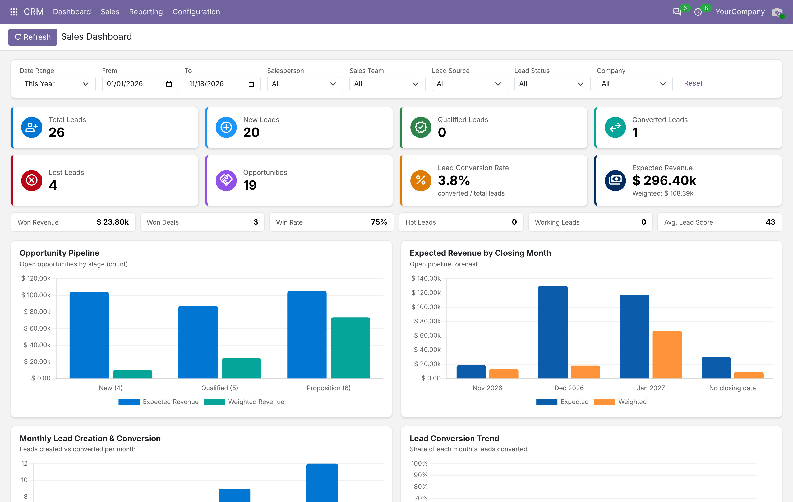
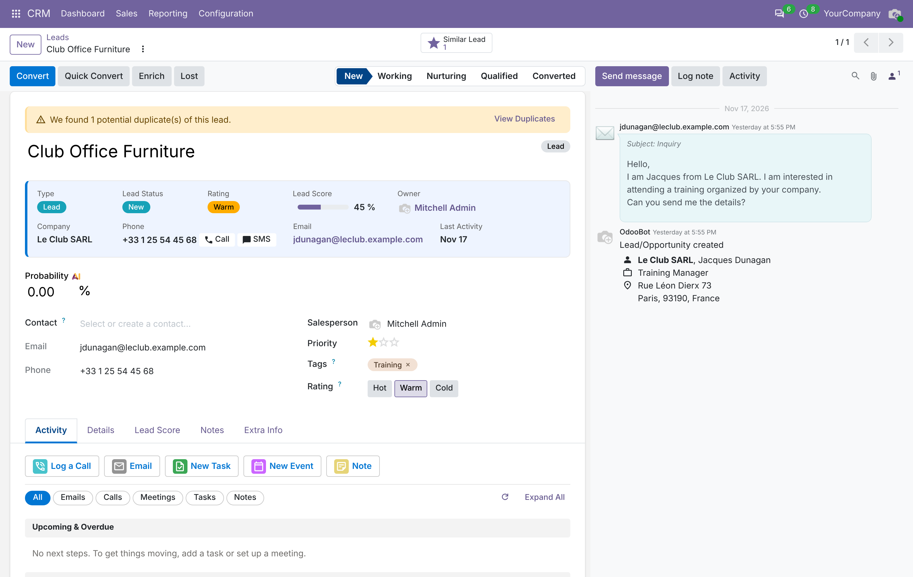
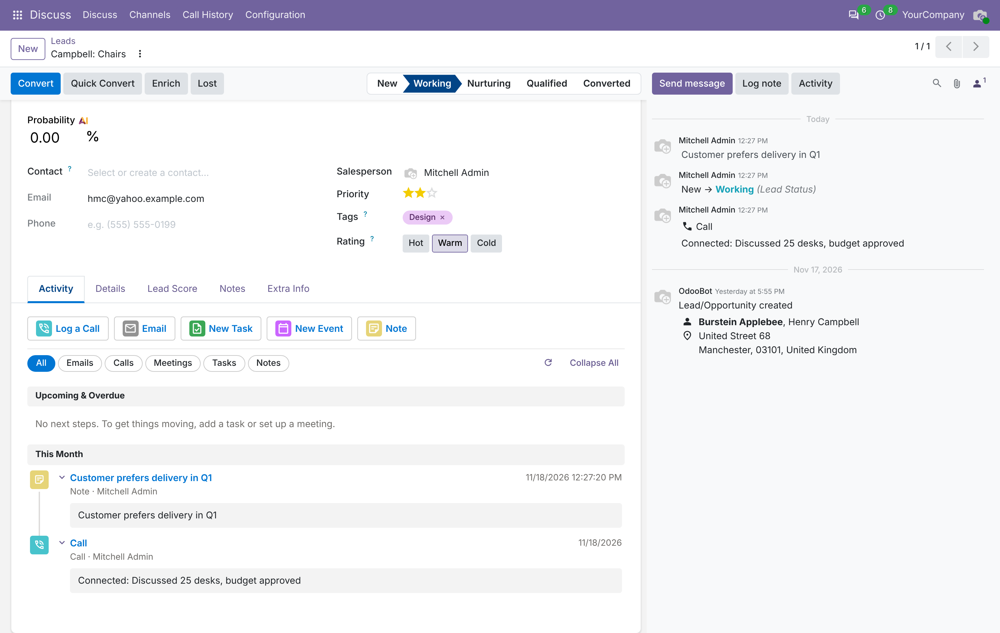
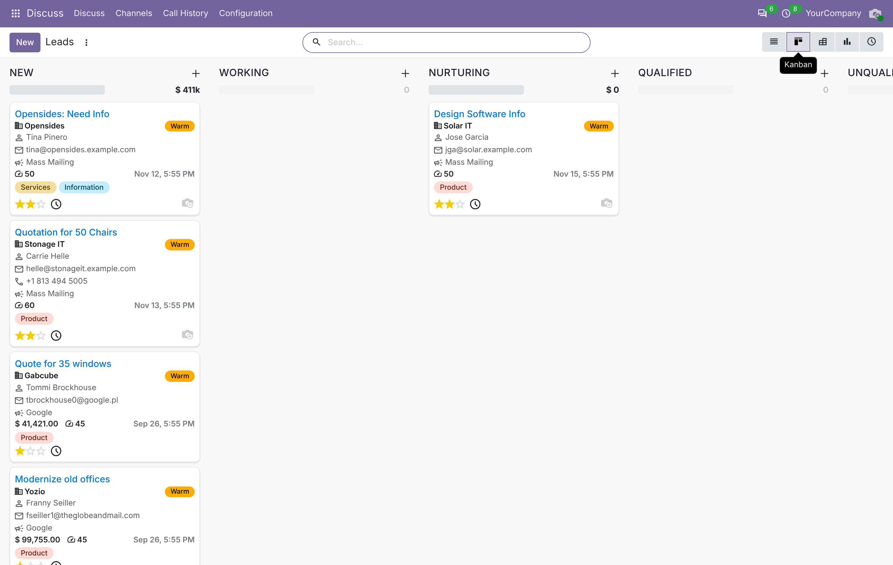
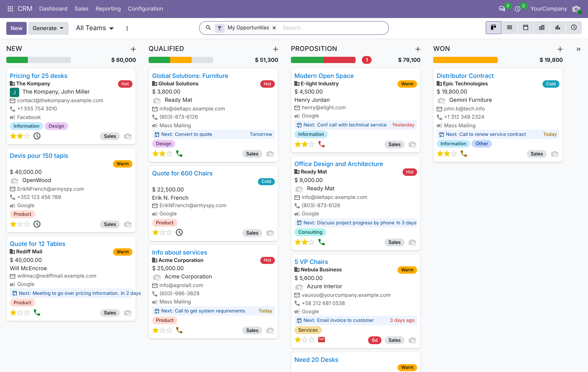
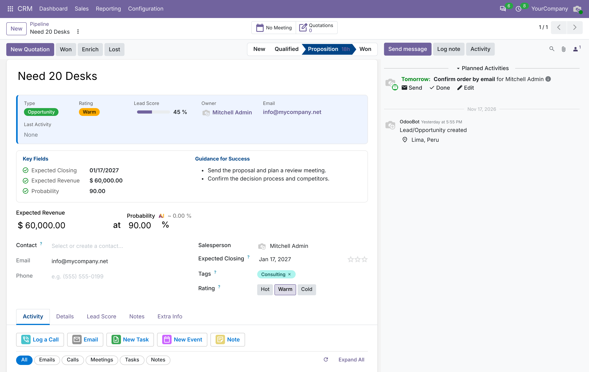
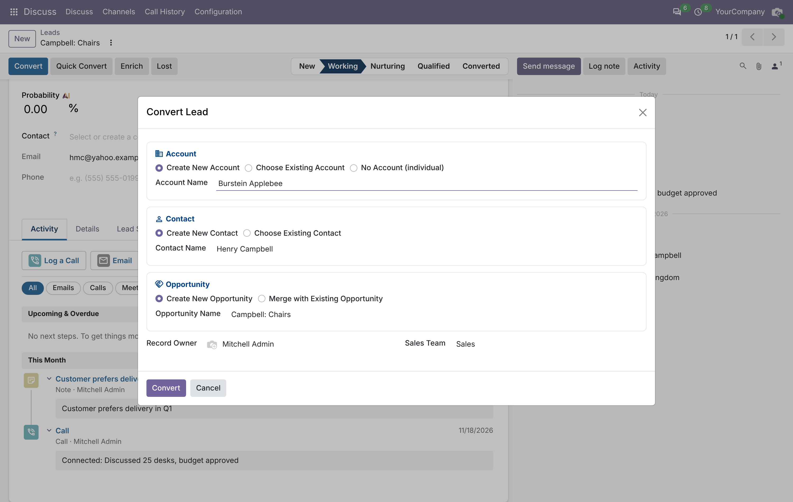
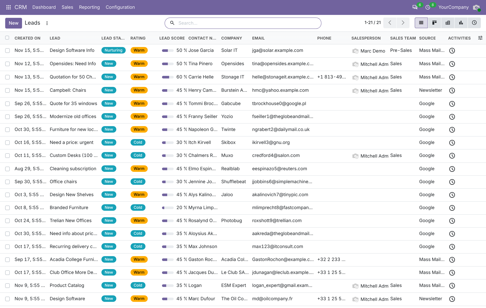
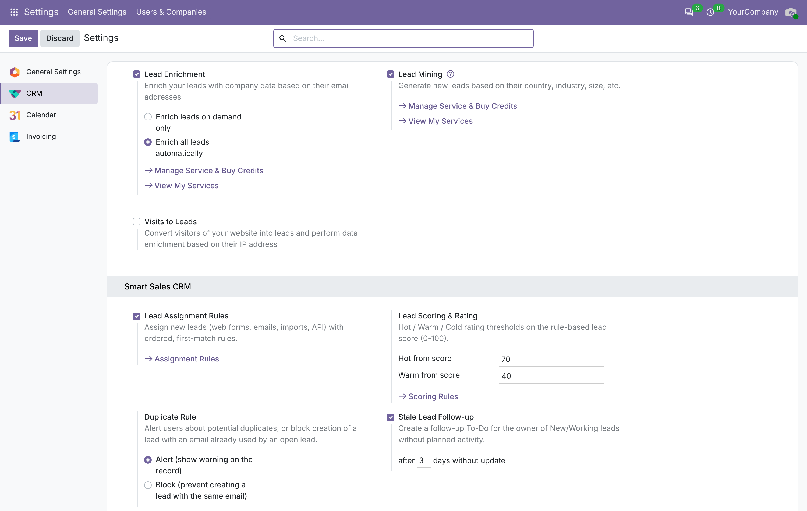

A modern, enterprise-grade CRM experience inside Odoo, without losing anything from Odoo CRM. Ideal for teams migrating from Salesforce or other enterprise CRMs: lead status, rating, assignment rules and convert lead flow will feel familiar. Nothing is replaced. Standard Odoo pipeline, predictive lead scoring, team assignment, forecast, chatter, calendar, quotations and reports keep working.








Donika Enterprise. Email: shra.patel225@gmail.com
Compatible with Odoo 20 Community and Enterprise. Depends only on crm.
Salesforce is a trademark of Salesforce, Inc. Smart Sales CRM is an independent Odoo module and is not affiliated with or endorsed by Salesforce, Inc.